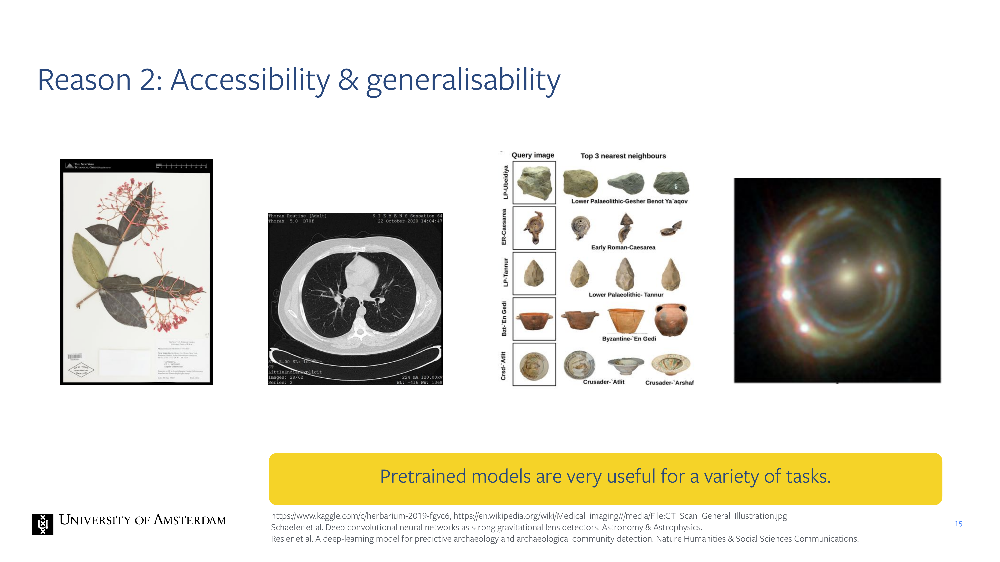
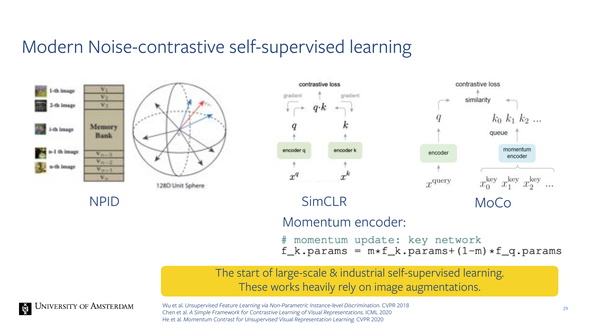
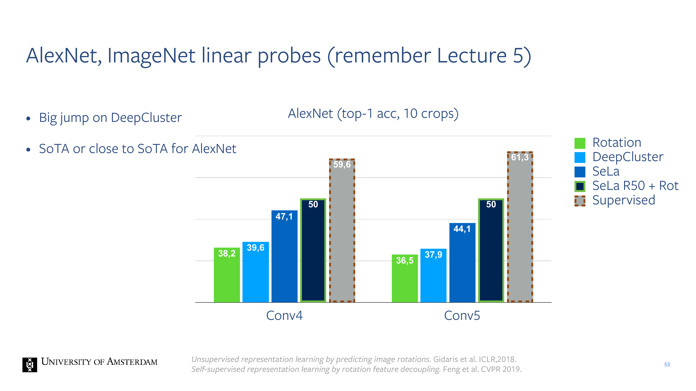
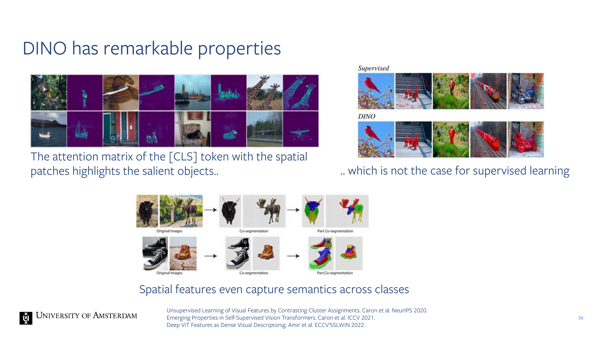
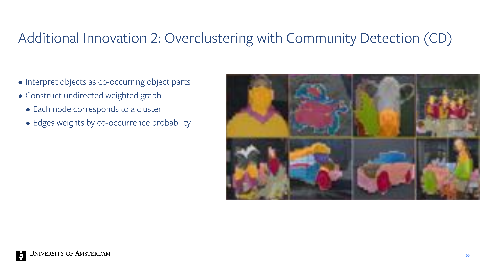

1 Selt-supervised learning for computer vision

2 Organisation
3 Self-supervised learning came up in multiple previous lectures.
4 Today:
5 Title
6 The field of Al has made rapid progress, the crucial fuel is data
7 Manual annotations for the data are limiting.
Weak supervised learnings are for i.e hastags in instagram, this can be noisy because a person can show a pic of a dog with #cute which is not very representative as a label
Weak supervised learning is a type of machine learning that falls between supervised and unsupervised learning. In weakly supervised learning, the training data is labeled, but the labels are noisy, incomplete, or imprecise. This approach is often used when it’s challenging or expensive to obtain a fully labeled dataset
8 Solving the problem of expensive annotations: self-supervision.
9 General procedure of self-supervised learning.
Here your transformation could be augmentations for instance.
The proxy task provides you with some gradients. That trains the DNN. Proxy tasks could be geometry based, clustering and so on
10 General procedure of self-supervised learning.
In Representation Learning you get image in and then vector out
Sueful Slef-supervised learning: You pose some task which was previously done in a supervised manner as a self-supervised task. This could be object detection & segmentation
11 Title
12 Reason 1: Scalability
13 Reason 1: Scalability

14 Reason 2: Constantly changing domains
15 Reason 2: Accessibility & generalisability

Why do we want to do self-supervised learning?
Once you have a pre-trained model you can example use it to classify samples
So you can do pre-training on a lot of data and then aftwerwards you can fine tuning it on your specific i.e hospital data.
Also pre-trained representations have been used in archeology for figuring out whether a particular sample belongs to a particular period
16 Reason 3: Ambiguity of labels
In weakly supervised learning you dont used lables that humans specifically provided but instead labels that you found i.e hastags that people place. Also for instance for the CLIP model where you have images and captions. This were just drawn from the internet so some of this captions you may see i.e a laptop and the labels may not be laptop but read product #15, or another example there may be a pic of a dog and it may say ‘my fav partner to go on a walk’. So that is ambiguous and confusing for the model. So instead serlf-supervise model implies that we only use the raw data, so we dont use any of the annotations.
So a reason to do self-supervised learning is that because these lalbels from the internet are already not accurate then you dont want to use them. Instead you can do slef-supervised learning where you train a DNN with unlabel data and then use it into your task at hand
17 Reason 4: Investigating the fundamentals of visual understanding
Can we understand really what happens without labels? so the fundamentals of computer vision.
18 Quiz:
Slef-supervised refers more to you want get something that you can use for another datasets. So topically in representation learning the dinstiction is clear because if you are learning a contrastive model that by itself is not usefull but in that case you can say self-supervised learning is part of supervised learning methodologies.
Normal AE are unsupervised learning methods
There another autoencoders that are self-supervised learners.
19 Title
20 Here, we will only cover the most important works.
Further details and recent developments can be found here:
21 How does one learn without labels?
We say that we need to generate gradients. So some type of signals that we can leverage include:
Reconstructions: we can remove some aprt of the image and ask the model to reconstruct what has been hidden
Geometry
22 Early methods: Context prediction
23 Note: similar to how BERT has been trained
24 Early methods
- Context Encoders, you maks now a part of a image, so you put a white mask on top of the image and then you trained a model to ouput a dense feature map that will put the pixeles at that location. You only apply the loss at this locations but because you use a CNN you train all the weights.
25 Geometry: RotNet: learn features by predicting “which way is up”.
26 Image-uniqueness: Exemplar CNN, precursor to contrastive learning
EXampler CNN came before Contrastive Learning, this helps to work on CLip. Here you augment the image multiple times for each iamge, and now you model needs to ouput which image identity it was.
The idea of image uniqueness is that if you have near dusplicate copies of the same image then it makes for a string signal. For isntance if you have a dog jumping vs a dog sitting, that is very difficult to differentiate so in that sense the model needs to learn quite some good feature in order to be differentiating these two classes.
This also enforces augmentation-invariance because all the different views, all the different augmentations of the image they should be the same
27 Modern Noise-contrastive self-supervised learning
After that people develop contrastive models.
The basic idea for simCLR is: you take two views for two images. You have two augmentations of the dogs a and two for the chair.
Here the softmax is calcualting the similarity of z_i and z_j. These are the last representations. The sim() function is the dot products which tells you how similar they are. You apply the softmax across all these dot products
28 CLIP from Lect 9 and assignment 2 simply applies SimCLR across modalities
29 Modern Noise-contrastive self-supervised learning

30 Masked Image Modelling (recent development)

Transformers work on sequences but CNN this approach would not work because the ouputs are always spatial that means you can simply leave some. Then you get a representation and your task is to predict all these missing patches given the patches that you have seen
31 Clustering
32 Title
33 Datasets for images: Pretraining and downstream
34 Recent surge in research on problematic images in ImageNet
35 Title
36 The dataset: diverse, containing nature and buildings.

37 Datasets for images: Pretraining and
38 Downstream semi-supervised tasks: Self-supervised Learning helps
- Supervised: red
- Self-supervised: Blue
39 Title
40 Title
41 Goal: Discover visual concepts without annotations.
42 How can we solve this chicken and egg problem?
43 The key to image understanding is separating meaning from appearance.

Even though the pixel values are different
44 Quiz:
- So if you stay in the same domain, or a clone one you know that that the \(lr\) would be quite similar
- You also can set the network architecture because if you know is a vision recognition taks then you know a Conv architecture is meaningful.
- If your dataset is small then you reduce it because you trained before with tons of images so the epochs were also big
45 Our work applies the idea of augmentation invariance to assign concepts.
46 Our work applies the idea of transformation invariance to assign concepts.
47 How can we optimize the labels and make assignments consistents
here we want to make y differentiable because we want to learn those labels.
48 SK optimisation (not needed for exam)
49 SK optimisation of assignments Q (not needed for exam)
50 Algorithm
51 Our method applied on 1.2 million images:
Examples
52 Automatically discovered concepts match manual annotation.

53 AlexNet, ImageNet linear probes (remember Lecture 5)

54 Self-supervised labelling from three core ideas
55 More recently…
56 DINO has remarkable properties

57 Title
58 However: The world is not object-centric.
59 Self-Supervised Learning of Object Parts for Semantic Segmentation
60 Self-Supervised Learning of Odject Parts for semantic Segmentation
61 Self-Supervised Learning has to move from image-level to spatially-dense learning
62 We propose a dense clustering pretext task to learn object parts
63 Quiz
- False. ROI-Align cannot take care of non-recatangular selections
- False, just like any pooling can provide gradients
64 Title
65 Additional Innovation 2: Overclustering with Community Detection (CD)

66 Overclustering with Community Detection ran.
67 Title
68 Leopart improves fully unsupervised SOTA by >6%
69 Leopart achieves transfer SOTA on three datasets simultaneously
70 Augmentations were key for both SeLa and Leopart.
71 How can we Isolate the effect of augmentations?
By learning from a single image
Py4t4
72 How do we go about thiss
73 What do we learn?
74 Tested images